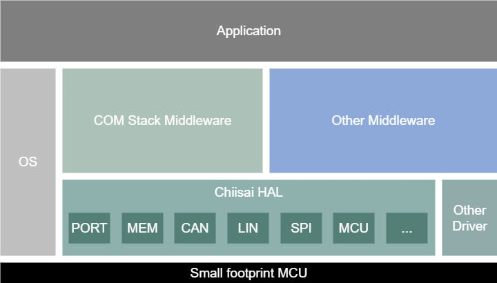

Architecture and Layering
Informative
How a Chiisai HAL driver sits in the system, how it is layered relative to the software above and the hardware below, and how it reports events back up — through an upper-layer interface stack where the module has one, and through callouts the integrator implements where it does not.
High-level architecture
The Chiisai HAL exposes hardware-independent interfaces that upper-layer software uses to access device functions. The operating system accesses hardware registers directly and does not go through the HAL; other (for example vendor-specific) drivers may run in parallel outside the HAL where needed.

High-level architecture: upper-layer software reaches the hardware through the Chiisai HAL, while the OS and other drivers may access the hardware directly.
The same relationships, simplified:
graph TD
APP[Application and middleware]
subgraph HAL[Chiisai HAL]
DRV[Driver modules: CAN, LIN, SPI, I2C, UART, Port, Mem, Mcu, Wdg]
end
OS[Operating system]
OTHER[Other / vendor drivers]
HW[MCU hardware and registers]
APP --> DRV
DRV --> HW
OS --> HW
OTHER --> HW
Layering concept
Around a driver there are up to three parties:
Party |
Role |
|---|---|
Upper-layer interface |
The module-specific interface stack above the driver (for example |
The driver |
The Chiisai HAL module itself: it programs the hardware and reports results back up. |
Integration code |
Project glue that supplies common services (logging, critical sections). For a module with
no upper-layer interface stack — |
Control flows down through the API and results flow back up — through the interface stack’s callbacks where there is one, and through callouts where there is not:
graph TD
UL["Upper-layer interface stack<br/>(e.g. CanIf)"]
INTEG["Integration code<br/>(<Mip>_Callout_Stubs.c)"]
DRV["Chiisai HAL driver"]
HW["Hardware"]
UL -->|"API calls"| DRV
INTEG -->|"API calls"| DRV
DRV -->|"programs"| HW
DRV -.->|"<Ma>If_On* callbacks"| UL
DRV -.->|"<Mip>_Callout_On* callouts"| INTEG
Which of the two applies is a property of the module, not of the project: it is fixed by the
module’s specification. The contract is part of each module’s API reference — see the Expected
interfaces group in API Reference for a module with a stack, and
API Reference for a module with callouts. The shared error and
notification model both follow — Std_ReturnType, LogM_Report, and the
On*/confirmation pattern — is defined once in the Reference; the naming
scheme is in Naming Conventions.
Delivery and packaging
How a driver is packaged, where its general types header comes from, and how the integrator wires their components to a callout module is covered in Integration Guidelines, with a diagram.